基本介紹
職業分類:英雄團、法師類
閃耀克魯（主武器）：單手武器、熟練度25%、武器係數1.2。卡勒馬彈（副武器）：限定夜光套用，分類至夜光彈。
主屬性：智力
擁有獨特的平衡系統．
優勢
1.在特定狀態下使用特定技能會增加傷害．
2.爆發傷害高
3.光狀態使用光魔法攻擊可回復HP1%，且以50%最終傷害追打。
4.暗狀態使用暗魔法攻擊消耗MP為0，且以50%最終傷害追打。
5.平衡狀態10秒內格擋提升至100%(加持可疊加)，有著光暗蝕兩種增益，使用均衡魔法時，以100%最終傷害追打。
6.練等速度快
7.本身不需無視，三武可洗％魔．
弱勢
1.爆發時間視平衡時間為定
2.平衡時間需靠蒙獸加持或戰地
3.瞬移跟殘廢一樣
傳授技能
● 滲透：
滲透：
70等：無視防禦+10%
120等；無視防禦+15%
新手技能
● 光蝕:使用光技能時追加50%傷害，並且回復1%HP。
光蝕:使用光技能時追加50%傷害，並且回復1%HP。
●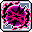暗蝕:使用暗技能時追加50%傷害，並且不需要消耗MP。
●滲透:攻擊怪物無視怪物的防禦力10%。
● 平衡:10秒內格擋100%，使用平衡技能時追加100%傷害，使用光技能時追加50%傷害，並且回復1%HP 使用暗技能時追加50%傷害，並且不需要消耗MP。
平衡:10秒內格擋100%，使用平衡技能時追加100%傷害，使用光技能時追加50%傷害，並且回復1%HP 使用暗技能時追加50%傷害，並且不需要消耗MP。
●星光瞬移:瞬間移動到所見最近的怪物位置，在村莊等非打怪地圖則是隨機瞬移。
● 光明力量:意志、洞察直接提升至20級，智力增加20，升級時提高MP增加量，永久對黑暗免疫。
光明力量:意志、洞察直接提升至20級，智力增加20，升級時提高MP增加量，永久對黑暗免疫。
一轉技能
●星星閃光[光](依據光/暗路選擇而決定技能):對前方的五位敵人攻擊一次。
●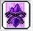黑暗球體[闇](依據光/暗路選擇而決定技能):對前方的六位敵人攻擊三次。
●閃光瞬步:即瞬間移動。與法師瞬間移動不同的是順移時附帶隱形暫時無敵，且範圍較廣。
●魔法防禦:即法師的魔心防禦被動版本。所受到傷害的85%以MP代替，若無可替代的MP則直接減少HP。
●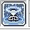補充魔力:增加30%的MP。
●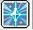光魔法強化:光系列魔法攻擊增加5%傷害。
●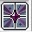暗魔法強化:暗系列魔法攻擊增加5%傷害。
二轉技能
●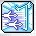光明長槍[光]:攻擊六位怪物四次。
●光柱爆發[光]:最多將十位怪物往左右彈開，為推怪技能。
●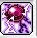黑暗之眼[闇]:攻擊8位敵人。按住不放會持續攻擊，攻擊方向用←→按鍵調整。
●黑暗祝福:三秒未遭受傷害則增加一顆球；受到傷害則以一顆球減少70%傷害。
●極速詠唱:180秒內提升攻擊速度2階段。
●咒語精通:提高閃亮克魯熟練度50%，且增加10魔攻。
●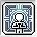智慧昇華:永久提高智力40。
三轉技能
●光箭[光]:攻擊八位敵人4次，可利用方向鍵轉換方向，按住技能鍵不放可持續攻擊。
●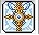閃亮救贖[光]:對六位敵人造成三次傷害，且可回復自己的HP。
●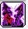黑暗之錨[闇]:對六位敵人造成兩次傷害。
●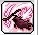死神鐮刀[平衡]:對十位敵人造成六次的強大傷害。
●魔力護盾:被動增加40%所有屬性及異常狀態抗性，主動可無視異常狀態三次，
●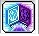光暗之盾:增加物理/魔法防禦300，且20%機率無視傷害。
●團隊精神:對自己及團隊成員增加40魔攻。
●光暗轉換:當MP比率大於HP比率時傷害+20% 當MP比率小於HP小比率時爆擊+30%
四轉技能
●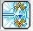急速反射[光] :對周圍最多八位敵人造成四次傷害。
●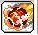晨星隕落[闇]:對八位敵人造成傷害，且會擊退怪物，攻擊後爆炸再產生一次傷害。
●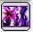暗黑烈焰[闇]:對八位敵人造成七次傷害。
●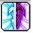絕對擊殺[平衡]:攻擊時對一般怪物最多2體秒殺，不適用即死的怪物或者BOSS則是造成七次傷害並且附加40%無視防禦效果。
●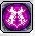黑暗強化:180秒內攻擊成功時有80%機率傷害增加1%，施放此技能後疊加效果會重置，最多重疊15次。
●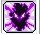黑暗魔心:180秒內無視怪物防禦40%、無視怪物屬性抗性100%
●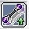精通魔法:提高閃亮克魯熟練度至70%，且增加30魔攻、增加爆擊最小傷害15%。
● 光暗精通:平衡狀態時間增加7秒。減少光蝕/暗蝕之間切換的時間，再追加死神鐮刀傷害100%
光暗精通:平衡狀態時間增加7秒。減少光蝕/暗蝕之間切換的時間，再追加死神鐮刀傷害100%
● 楓葉祝福:對自己和所有成員提升所有的屬性15%。
楓葉祝福:對自己和所有成員提升所有的屬性15%。
● 楓葉淨化:解除異常狀態。
楓葉淨化:解除異常狀態。
超技能
●(P)極速反射-強化加農：增加總傷20%。
●(P)極速反射-提高射程：提高射程50。
● (P)極速反射-釋放：傷害轉移減少量減少至0%。
(P)極速反射-釋放：傷害轉移減少量減少至0%。
●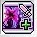(P)暗黑烈焰-強化加農：增加總傷20%。
●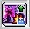(P)暗黑烈焰-臨時目標：最大目標量增加2。
●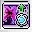(P)暗黑烈焰-靈魂充能：提高蓄能量。
●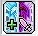(P)絕對擊殺-強化加農：增加總傷20%。
●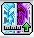(P)絕對擊殺-提高射程：提高射程40。
●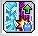(P)絕對擊殺-臨時目標：最大目標量增加1。
●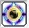重啟平衡(140)：進入平衡狀態。*無法加持延長
●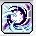末日審判(160)：最多綁15名敵人，傷害越高綁越久。
●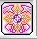英雄誓言(190)：60秒內傷害增加10%。*英雄團隊員可共享
五轉技能
●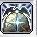真理之門(V1)：37秒內，每五秒向12名敵人攻擊10次
●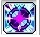混沌共鳴(V2)：6秒內向10名敵人攻擊。 (光蝕 ：週期性攻擊四次；暗蝕：週期性攻擊五次；平衡：週期性攻擊六次。)
●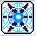光與暗的洗禮(V3)：發動十三次的七次攻擊，使用絕對擊殺可獲得一把意志之劍，十二把可重置CD。*爆擊率、無視防禦率100%